智慧型影像辨識圖書上架系統
研究與實現
圖書歸還後不用人工判讀書名、找位置再上架,這套系統靠攝影機直接辨識書背文字,配合機器人自動送回書架,不用貼任何條碼或標籤。跑了 2,723 筆實驗數據驗證辨識穩定度,發表過一場學術研討會海報論文。
01研究動機
圖書歸還後,館員要人工判讀書名、查位置再上架,流程繁瑣又容易出錯。這個研究做一套低成本的軟硬整合系統,把「辨識書籍」到「送回書架」自動化。
系統分兩條硬體路徑:還書端由主機(Windows 11 + Python)接 Logitech C270 攝影機,每約 1.5 秒擷取一次畫面,經 OpenCV 前處理跟 Tesseract OCR 辨識書背文字,再用 Levenshtein 距離模糊比對找最接近的書名;另一端由 ESP32 + 9 顆紅外線感測器監控 3×3 書架格位狀態。兩端不直接溝通,都透過雲端資料庫的旗標欄位同步。全程不用為書籍加裝條碼或 RFID 標籤。
確認書籍身分後,LEGO EV3Dev 機器人載具負責取件、移動、對接書架、送入;雲端資料庫(PHP+MySQL)即時更新館藏狀態,使用者用 LINE Bot 查詢書籍位置跟狀態。
| 類型 | 碩士論文 |
|---|---|
| 角色 | 獨立設計與實作 |
| 硬體 | Logitech C270 / ESP32 / EV3Dev / 自製 PCB |
| 軟體 | Python(OpenCV/OCR)、Django、PHP |
| 發表 | 全國性學術研討會 海報論文 |

02系統設計
感測與辨識層 — 不貼標籤,直接看書名
用 Logitech C270 USB 攝影機直接辨識書名本身,不靠 ESP32 觸發。前處理流程:灰階(Y=0.299R+0.587G+0.114B)→ 雙三次插值放大 1.5× → CLAHE 8×8 區塊局部對比強化(clipLimit=2.0)→ Otsu 二值化抓書卡輪廓做去歪斜校正,再交給 Tesseract OCR 辨識,最後用 Levenshtein 編輯距離正規化相似度(門檻 0.60)做模糊比對,容忍 OCR 誤判 1~2 字。
- 去歪斜實測:23° 傾斜未校正僅 3.3% 辨識率,校正後回升至 95%
- 2,723 筆辨識資料、29 種測試條件,全程寫入 OCR_LOG 可追溯
- 刻意不採 Otsu 二值化做前處理(原因見下方「設計取捨」)
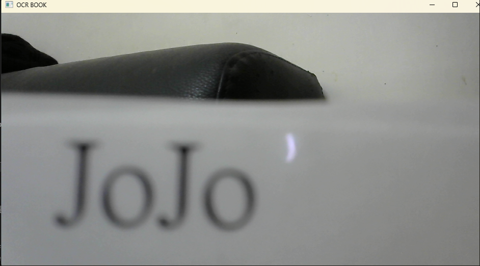
機器人取放層 — 樂高刷成連網 Linux 機器人
把 LEGO EV3 刷成 EV3Dev(Linux),用 Python 寫控制邏輯,直接連線查雲端資料庫。四顆馬達分工:X 軸水平移動、Y 軸升降、對接馬達推出/收回、滾輪馬達撥書入架。定位不用編碼器,在地面/書架貼色塊,用顏色感測器邊走邊數格數。
- 色塊計數定位,X/Y 軸共用同一套邏輯
- 對接後用紅/綠色塊二次確認對準,反射光感測器確認書已送入書架
- 輪詢資料庫 status 欄位,變成 on 才算歸位完成
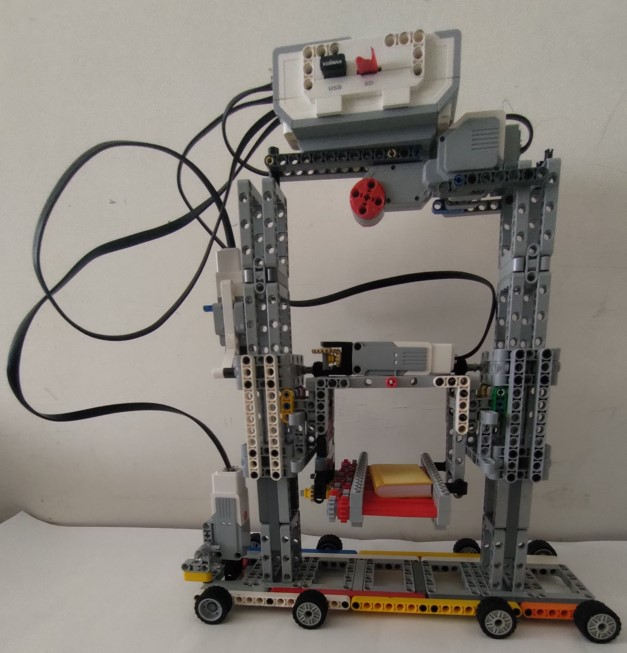
使用者互動層 — LINE 查書、取書
後端 Django + Ngrok 建 HTTPS 通道,前端用 LINE Messaging API 的 Carousel 選單,讀者不用裝額外的 App。指令不只查詢,還有借閱、排行、AI 客服。
- 「找-書名」→ 模糊比對選單 → 回覆書架位置
- 「拿-書名」→ 比對+二次確認 → 觸發載具取書
- 「查詢館藏」回報在架總數;「作者-名」列出該作者館藏(每10本分頁)
- 「熱門書籍排行」讀借閱排行表;「問-」接 AI 客服問答
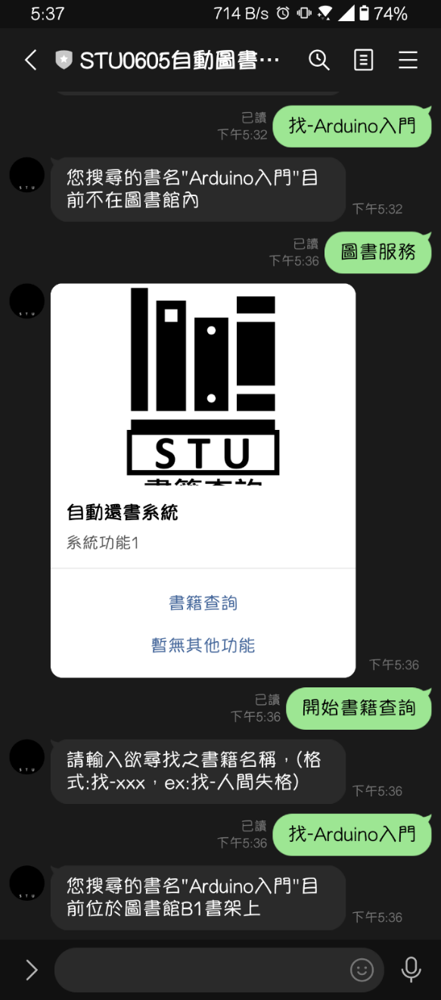
硬體與資料層 — 單一資料表 + 旗標接力
感測電路用 Altium Designer 設計並手工雕刻 PCB,搭配 3D 列印外殼整合模組。核心設計是用一張 DATA 表當唯一資料來源(書名、座標、status、wait/take/put 等旗標欄位),影像辨識、EV3、ESP32、LINE Bot 四端不直接溝通,全部透過 PHP API 讀寫同一張表的旗標接力——任一端故障不會卡死其他端。另設 OCR_LOG 實驗記錄表跟 BORROW_RANK 借閱排行表。
- 旗標接力:辨識設 wait='ok' → EV3 收到出發 → 紅外線改 status='on' → LINE 查 status 回報位置
- 四端資料庫存取 <200ms,LINE 回應約 0.5~1 秒
- PHP + MySQL 雲端資料庫,部署門檻低、跨平台可串接
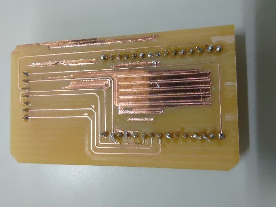
03研究成果
全程自動記錄至 OCR_LOG,累計 2,723 筆辨識資料,涵蓋 29 種測試條件。以下是六項關鍵變因的實測結果。
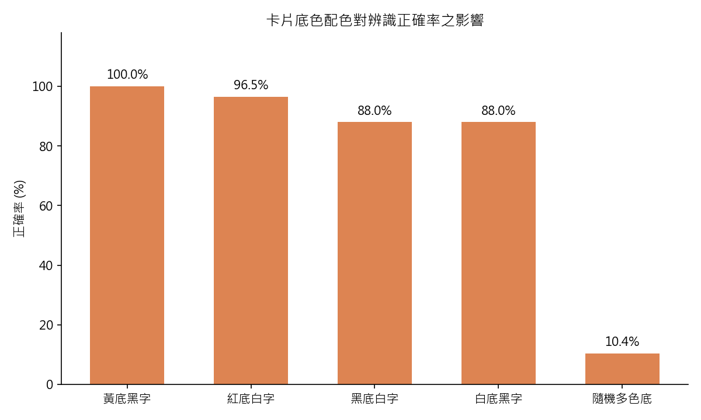
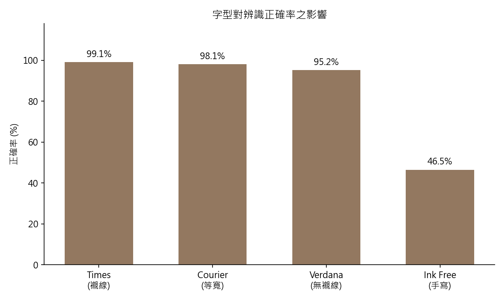
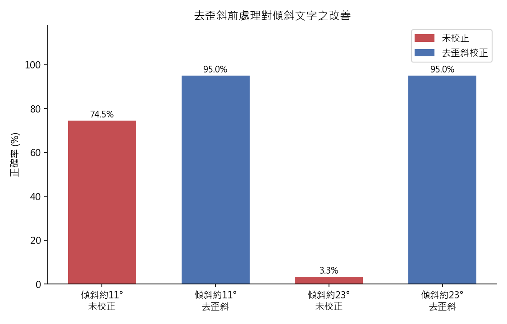
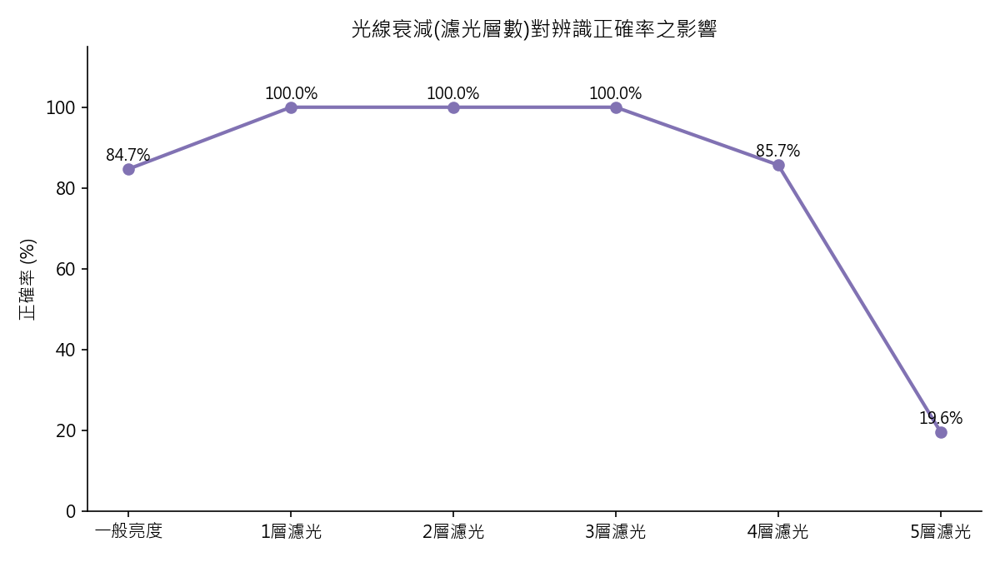
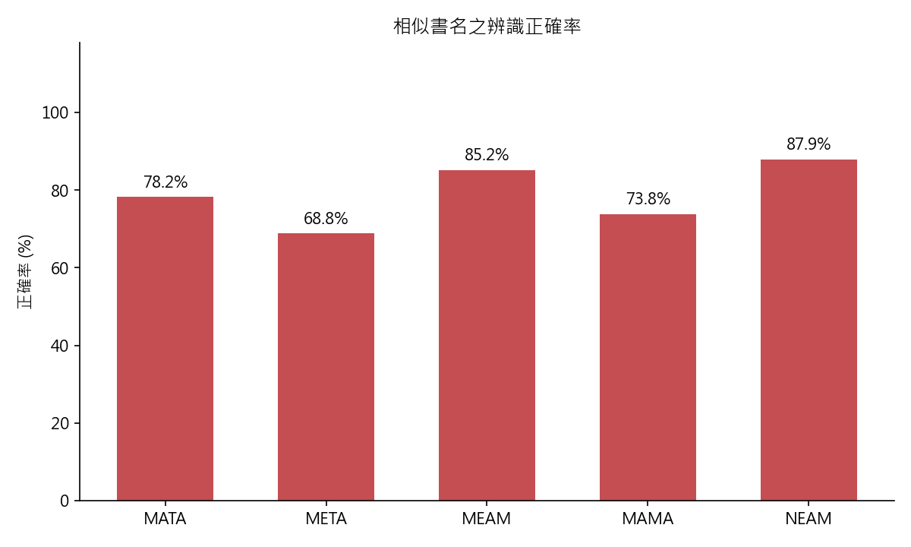
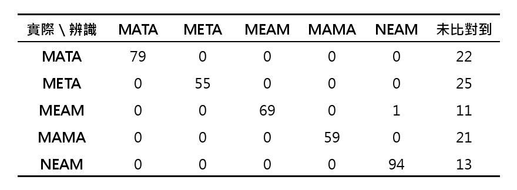
這是加 Levenshtein 模糊比對的原因——OCR 辨識不完整或有錯字時,還是能對照資料庫校正回最接近的書名。模糊比對門檻(0.60)也是從這批實測數據調出來的,不是憑感覺訂的。
04設計取捨與研究限制
做過的判斷不只是「做出來會動」,也包含「測過為什麼不這樣做」。以下是實測後的取捨,跟系統目前的限制。
| 為何不用 Otsu 二值化 | 實測發現深色背景會被整片轉黑、書名筆畫被吃掉(Words=0、平均信心度 0%),自動 ROI 裁切也常誤切到書名。最終前處理只留「放大+灰階+CLAHE(+去歪斜)」,不做二值化與 ROI。 |
|---|---|
| 為何選 Tesseract,不用雲端 OCR | PaddleOCR/Google Vision 辨識率更高,但一個吃硬體資源、一個要連網收費。書名多半是單一整塊文字,Tesseract 離線免費、可調 --psm 6 剛好符合需求。 |
| 雲端資料庫的已知限制 | PHP API 用 HTTP GET 帶 SQL 呼叫,目前只靠金鑰驗證,沒有注入防護;單表設計大規模擴充有限;依賴網路連線品質。 |
| LINE Bot 通道的限制 | Ngrok 建的 HTTPS 通道只適合開發階段(網址會變),正式上線要換固定網址的雲端主機;查詢功能依賴外部 LINE API 可用性。 |
| EV3 硬體的限制 | 樂高教育套件承重有限,只適合輕量示範,沒辦法載真實圖書館等級的書籍重量跟運送距離。 |
| 模糊比對門檻是經驗值 | 0.60 是實測調參的結果,兼顧準確跟容錯,但換一批書名分佈可能要重新校準,不是固定不變的數字。 |
05功能模組
| OCR 定時擷取 | Logitech C270 每約 1.5 秒擷取一次畫面,持續監看還書狀況 |
|---|---|
| 紅外線格位感測 | ESP32 + 9 顆紅外線,監控 3×3 書架格位狀態,與攝影機是獨立路徑 |
| OCR 前處理 | OpenCV 影像前處理,提升文字辨識清晰度 |
| 模糊比對校正 | Levenshtein 距離對照資料庫,修正 OCR 辨識誤差 |
| 去歪斜校正 | Otsu 二值化+minAreaRect 抓書卡輪廓,校正傾斜書名 |
| EV3 移動控制 | EV3Dev 控制載具移動、定位 |
| EV3 取放對接 | 機構升降、對接書架,完成實體取放動作 |
| 雲端即時同步 | PHP + MySQL,館藏狀態即時更新供各端查詢 |
| LINE Bot 五指令 | 找書、拿書、查詢館藏、查作者、借閱排行 |
| PCB 電路設計 | Altium Designer 設計並手工雕刻感測電路板 |
| 3D 列印外殼 | 客製化書籍外殼,輔助感測定位與保護硬體 |
| 學術發表 | 研究成果以海報論文形式於全國性學術研討會發表 |
| 跨平台整合 | Python / PHP / C++ 跨語言,嵌入式到雲端跨平台串接 |
06現場照片
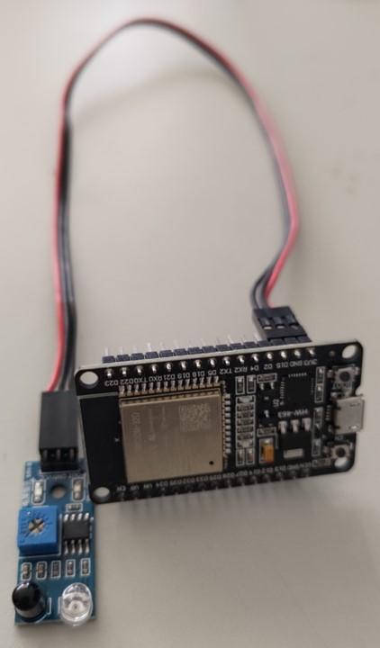
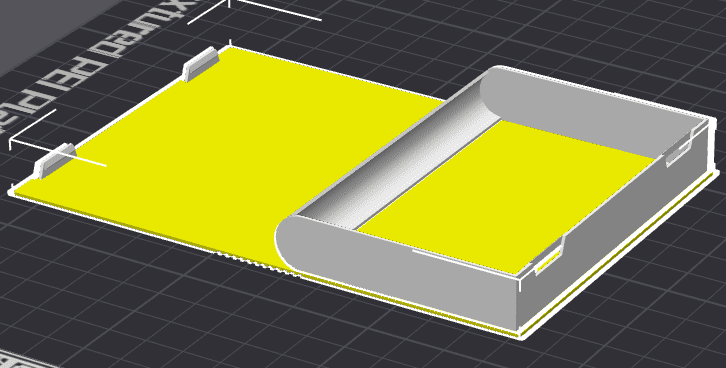
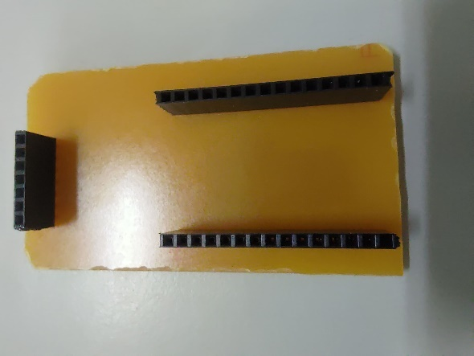
07展示影片
08技術棧
| 嵌入式 / 硬體 | Logitech C270、ESP32、紅外線感測器、EV3Dev(Linux)、Altium Designer、3D 列印 |
|---|---|
| 影像與演算法 | OpenCV、Tesseract OCR、Levenshtein 距離模糊比對、Python |
| 機器人控制 | LEGO EV3Dev、Python 動作控制、感測定位 |
| 後端與資料庫 | Django、PHP、MySQL |
| 使用者介面 | LINE Messaging API、Carousel Template |
ESP32 · C/C++ · Python · OpenCV · Tesseract OCR · CLAHE · EV3Dev · Django · PHP · MySQL · LINE Messaging API · Altium Designer
09未來方向
| 深度學習 OCR | 導入 CRNN / TrOCR / PaddleOCR,取代傳統 OCR 提升複雜書封辨識率 |
|---|---|
| RFID + 影像雙重識別 | 結合 RFID 與影像辨識雙重確認身分,降低誤判機率 |
| 多書架 / 多載具 | 擴充為分散式系統,支援多書架區域與多台載具協同運作 |
| 借還大數據分析 | 累積借閱紀錄做趨勢分析,支援選書、汰換決策 |
| LINE Bot + LLM | 導入大型語言模型,提供選書推薦與自然語言問答 |